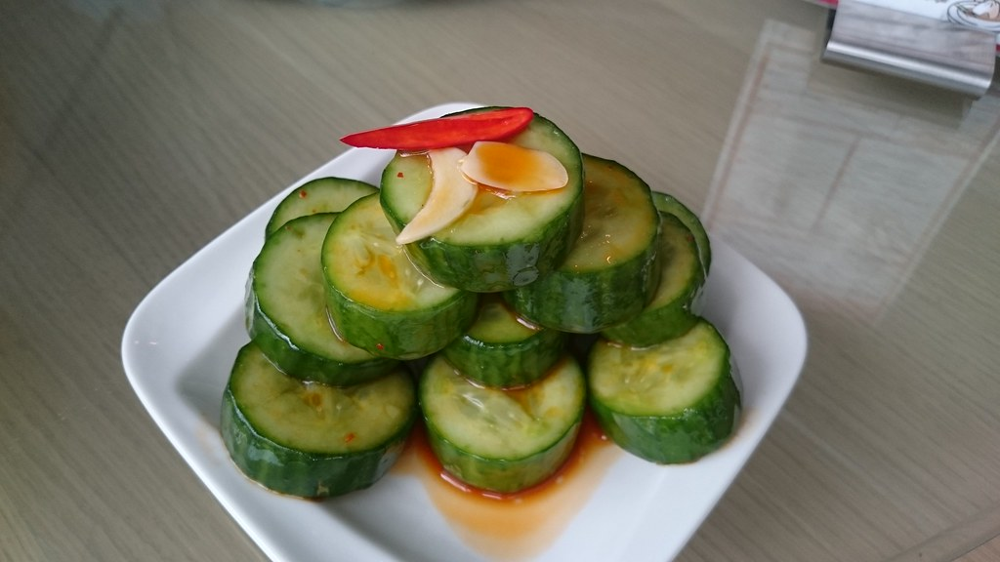

Din Tai Fung Cucumber Salad

Description
Din Tai Fung Copycat Cucumber Salad - A refreshingly crisp and addictive cucumber salad that captures the signature flavors of the famous restaurant's
beloved side dish. These perfectly sliced ½-inch cucumber rounds are pre-salted to achieve maximum crispness, then marinated in a tantalizing combination
of soy sauce, rice vinegar, and aromatic garlic that creates an addictive balance of tangy, garlicky flavors. Every bite delivers a burst of bold Asian flavors
with the satisfying crunch that Din Tai Fung is famous for, making this fresh and not too spicy salad the perfect cooling complement to any meal or an irresistible
standalone appetizer.
Ingredients
- 1 (1 1/4 pound) English cucumber, sliced into 1/2-inch rounds
- 1 teaspoon kosher salt
- 2 tablespoons soy sauce
- 2 tablespoons rice vinegar
- 2 cloves garlic, minced
- 1 1/2 teaspoons sugar
- 1 1/2 teaspoons toasted sesame oil
- 1 1/2 teaspoons chili oil
Steps
- Place cucumbers in a large bowl. Sprinkle with salt and let stand for 30 min.
- Rinse cucumbers with water to remove salt, and pat dry with paper towels.
- In a separate bowl whisk soy sauce, vinegar, garlic, sugar, sesame oil, and chili oil until smooth
- Add cucumber slices to the oil mixture; stir to combine. Let stand for 10 minutes. Serve immediately